""The Envelopes Please!""
December/January 1996
Garden and Yard: Best Seed for Spring
The votes are in and we've picked our favorite seeds for next season's planting .
By Mort Mather
Arriving at favorite varieties can be tricky for a gardener. To begin with, we have a limited amount of space. We may also be limited by time since gardening, for most of us, is a part-time occupation, perhaps a hobby. Most gardeners don't involve themselves with planting several varieties side by side at the same time in the garden. We may recall that the carrots or the corn or the tomatoes were particularly good one year, and we may plant that variety again the next year. The second year we may wonder why we were so excited about the flavor the year before.
Our 1996 garden. Dead center in the foreground are four rows of Nantes haff-long carrots, and another four rows are in the back to the right. To the right of the carrot patch is a row of potatoes. To their rigid a a row of Prodder green beans. To the left of the carrots and behind the owl is a tent of Romano pole beans. Opposite page: A fine example of our Elondo eggplant.
The only way to make a true comparison is to plant several varieties that are comparable and see that they are treated alike. They all must get the same amount of sun, water, fertilizer, and care and be grown in the same type of soil. Then comes the tough part: judging the flavor, texture, storability, color, resistance to disease and insects, etc. After much heartache and research, we've come up with a selection of our favorite seed for next spring that will take the guesswork out of your harvest. Our apologies in advance to those who'll no doubt be irked by our failure to mention their favorite. So on to the awards.
The Acquired Taste of Eggplant
Last summer we grew two varieties of eggplant. I recall my wife Barbara cooking up both for our comparison tasting. One had a very delicate flavor. The texture was creamy. It almost melted in our mouths. The other had a tougher skin and was more solid throughout. It had a strong eggplant flavor. Which did we like best? The one with the strong flavor. We were eating eggplant, after all, and we were eating it because we like eggplant. We usually go for the stronger vegetable flavor, as you will see in some of our other selections. This is an opinion article. If everyone agreed with us, the number of varieties available would dwindle. If that happened, we would have to switch varieties just to keep choice alive.
The two eggplant varieties came from Johnny's Selected Seeds. The delicately flavored vegetable was, according to the catalog, "No. 226 (F1 ): 55 days. (Round) New in 1995. Small, round 'baby' eggplant. No. 226 produces quantities of almost perfectly round, about 3" diameter, dark purple fruits, glossy and smooth. Perfect for specialty markets, and for prolific, early home garden production. Medium-size plants prefer good fertility.
Tender, quick-cooking flesh. Glossy purple calyx." The stronger eggplant flavor belonged to "Elondo (F1): 68 days. Large, cylindrical Italian type. Elondo is a lovely, productive variety with glossy dark purple skin and bright green calyx. Earlier maturing than many varieties of this type, with good yield potential in both heat and cold stress. The plant is large with strong branches." We found these catalog descriptions to be accurate.
Most seed companies tout certain varieties in the front of their catalog: "The best for '96," "New in 1996; "Our customers' all-time favorites." The inside of the front cover of Johnny's catalog boasted: "Eggplant, black bell, early and highly productive. This medium-large, glossy, black eggplant is a gorgeous variety in the Italian style." I didn't pick that one, nor did I pick Neon, which was pictured, or Orient Express, which was said to have "outstanding early productivity." I picked the earliest- and the latest-maturing varieties. It was a place to start. It might have given me a longer season than another mix, which was the intent.
Carrots
Carrots don't take up much garden space, so most gardeners can experiment with several varieties. Even though I know Nantes half-long are my favorites, I will usually throw in another variety or two. A test plot of carrots need be no more than a foot of row. The tricky part is buying several varieties and keeping track of which you planted where.
We had settled on Nantes half-long as our favorite several years before I decided to try growing vegetables for market. There are a couple of things that made my carrots better than the ones markets were used to getting. For one thing, carrots get sweeter after a frost; there are some advantages to a short growing season. The other reason, I suspect, is that few large commercial growers grow Nantes halflong. They are brittle and break easily. This is not a good feature for shipping.
First Days of the Condor ...Zucchini
Your average gardener is more than happy with just one zucchini plant, and since each plant takes up about 10 square feet of garden space it doesn't make sense to plant several varieties. As a market gardener, however, I could go in search of the best zucchini. In 1977 I planted six varieties, ten seeds of each variety. At the end of the year I was a fan of Elite, an exclusive of the Harris Seed Company. We did a number of taste comparisons and couldn't find a discernible difference. What sold me was the way the plant grows. II has a central stalk that is easy to find, and the zucchini grow off of this stalk, reaching harvestable size in a day and a half. The color is a very marketable dark green.
However, I have continued to look for the perfect zucchini over the years because I could not get Elite in untreated seed. When you get seeds in strange colors-chartreuse, fuchsia, magenta, and the like-it is to let you know that a fungicide has been sprayed on the seeds. I am not quite a purist. I have planted treated seed. But I don't like to, and I avoid it most of the time. The only time I knowingly ordered treated seed was when I grew Elite in my market garden, but we found a replacement last summer. "Condor (F1) 48 days. Glossy, deep green zucchini. Brilliant, medium dark green zucchini with earliness and high yields. Condor's slender, slightly tapered fruits feature a distinc tive, glossy, rich deep green color flecked with pale green. They have a fresh appearance, harvested small or large. The vigorous, open, nearly spineless bush is easy to pick." It, too, is from Johnny's. They only treat corn seed, and only for people who request it.
Corn
Our favorite open-pollinated vegetable is Golden Cross Bantam corn. We didn't grow any last year and wondered why. Actually there was a reason. I generally plant four different varieties of corn. If I get it right we will be able to eat corn from the garden from late July to late September. Each variety will be at or near its peak for about two weeks. When planning and planting, I have to be careful to keep two varieties from pollinating at the same time. If they cross-pollinate, the result is likely to be missing rows or other odd results in the ears. Golden Cross Bantam from Burpee is listed as 85 days to maturity and I was planting another variety with approximately the same maturity date, so I left out the Bantam.
Golden Bantam has the best corn flavor we know. There are other varieties that are sweeter. Other varieties may be more tender, and certainly other varieties have a longer at- or near-peak period. But there is none other that tastes more like corn, and we like the traditional flavor of corn.
Another variety that has been around a long time is Silver Queen. It is a late corn, taking 92 days to harvest. This stretches our growing season to the maximum. Silver Queen usually reaches harvestable condition shortly after Labor Day and takes us to frost. It is a wonderful sweet white corn.
For anyone who is going to plant only one variety of corn, I would advise staying away from the early varieties. Their best feature is being early. A mid-season bicolor is probably the best bet. It will have a longer harvestable period than Bantam and probably be more satisfying overall.
Corn has recently gotten very high-tech with "sugary enhanced" and "supersweet" genes. The following description from Johnny's Selected Seeds 1996 catalog sorts it out as well as any description I have seen:
1. "Normal Sugary" (su). Kernels contain moderate but varying degrees of sugar, depending on the variety. Sugars convert to starch rapidly after harvest. Traditional corn favor.
2. "Sugary Enhanced" (se) and (se+). This gene, when present, modifies the normal sugary (su) gene. The results much increased tenderness and, to a varying degree, sweetness. The conversion of sugar to starch after harvest is slowed. Varieties are described as "SE" and "EH."No isolation from "Normal" (su) sweet carn is necessary when planting an (se). More specifically, (se) varieties are hybrids between an (se) parent and an (su) parent, technically "heterozygous se" or "1/4 sugary enhanced" for increased tenderness and sweetness; (se+) varieties are hybrids between two (se) parents, hence "homozygous se" or "fully sugary enhanced," and very tender and sweet.
3. "Shrunken" (shs). This gene's name is descriptive of its effect on the appearance of the dry kernel. Its presence creates greatly heightened sweetness and slow conversion to starch after harvest. Common name for this type is "Super Sweet." Cross-pollination between a "Super Sweet" and a "Normal" or "Sugary Enhanced" variety will result in tough, starchy kernels in both types.
Beets
Our favorite beet is another old variety that I remember as a child: Lutz green leaf, a good winter keeper that will never win a beauty prize. It is downright ugly, and you wouldn't think that a beet the size of a softball or larger would be tender and tasty but it is. The greens are green, as the name says, and they are just as good or better than any beet greens I've ever had. The beets can be harvested at any size so you can thin them throughout the growing season. In the fall the big ugly roots are harvested, topped, and put in the root cellar where they last well into winter, providing tender, tasty ...I already said that.
Peas
Since peas are the first vegetable to be planted in the spring, they received a lot of scrutiny early on. We decided we couldn't tell the difference between Lincoln and Green Arrow. We plant whichever is in the catalog we are using and is least expensive. Good friends of ours swear by Thomas Laxton peas. We ruled them out twice. There is no accounting for taste.
Lettuce
Our first vegetable trial was in our first garden, and the vegetable on trial was lettuce. Lettuce has been on trial just about every year, though there are some that are absolute favorites. I keep looking at different lettuces because there are so many qualities that are worth looking at. To say that one lettuce is better than another is frequently difficult because a variety of flavors in lettuce is actually desirable. Think about the salad greens that are not lettuce but are often found in gourmet salads. Arugula, endive, mustard greens, and radicchio are just a few of the greens (and reds) that add to the flavor and color of salads. Flavors range from sweet to hot to bitter.
I can only remember one lettuce that we grew whose flavor we thought worth forgetting. As I recall, it was touted as being especially slow to bolt. It may have been, but flavor overruled any interest in other properties. I have not seen Tania in any catalogs recently, but if you do, avoid it.
I seldom grow iceberg lettuce. Some gardeners are kind of snobbish about iceberg because it is the most popular lettuce commercially. I like it, though. I think it is the best lettuce for sandwiches because it contains more water than does leaf lettuce. It is sweeter and milder than most lettuces. I have found that the only way to get it to grow well is to transplant in the spring so it does most of its growing in cool weather. Ithaca is my favorite.
Cool weather is the real key to lettuce. Any variety will do well under cool conditions. However, we want lettuce when the tomatoes are ripe, so we are always looking for lettuce that is slow to bolt. Lettuce, as we are most familiar with it, grows in a fairly compact plant close to the ground. That is actually the young or immature plant. The mature plant is tall and has flowers. We are most interested in the plant from the time it reaches a nice head size until it sends up its mature stalk and bolts.
There are three lettuces that are staples in our summer garden. They were also the varieties I grew for market. It is difficult to put any above another, but Buttercrunch is probably the lettuce we would choose if we had to have only one variety. It has been around the longest and has won the most awards. It is carried by most seed companies and can be found in most seed racks. Parris Island Cos is another old standby. Barbara likes Cos or Romaine lettuce more than I do. I like it when it comes out of our garden but I have had some leathery leaves that I didn't care for in salads in restaurants. Green ice is the third of our top three. It was developed by Burpee and was a Burpee exclusive for several years. "Green Ice 45 days. The sweetest lettuce in our trials. Dark green, ruffled leaves. Very slow to bolt." (Burpee catalog.)
Green la end Buttercrunch lettuce. Tie ploto was taken a August, daring how well they grow a hot weather.
Another variety that has been around forever is Black Seeded Simpson. We haven't grown it for many years but will put it back on the list this year. I suspect that these were dropped because they bolted sooner than the favorite three. Now that we are better gardeners we can make a short-season vegetable work well for us.
Lettuce seeds store well, up to 10 years if kept dry and out of the light. This makes it easy to have many varieties. You can buy two or three new varieties each year, plant the seed sparingly, and at the end of 10 years have 20 or 30 different varieties.
The Noble Tomato
I thought I had found the perfect tomato 15 or more years ago. A friend was raving about the seedlings he was getting from an old Greek fellow who had a small greenhouse attached to his house. I got some and the seedlings were, indeed, very strong and a very good variety. A couple of years later when we went to get seedlings the man was gone. He had left his house. We tracked him down and found him living with his son. Getting an interview with him was difficult but these tomatoes were so good that our group, his fan club, persisted until we could talk with him.
He seemed very old when we met with him, but when he found out we had come to talk about gardening his face lit up and years were instantly shed. We went away feeling saddened that he was no longer able to garden. He couldn't recall the variety of tomato he planted but he knew that he always got his seed from Vesey Seed Company in Nova Scotia. That was enough to track it down further to a variety called Scotia. We all planted Scotia tomatoes that year but were disappointed. We tried for several years but never got plants or tomatoes that could compare with our memory of those we had gotten from the old Greek gardener. Perhaps we didn't get the variety right. Perhaps he had a touch we couldn't match.
We generally plant one cherry tomato for the earliest harvest, three or four large tomatoes, and a couple of plum tomatoes, which are dryer and make less-watery canned tomatoes. Last year Johnny's 361 "bush beefsteak" was particularly satisfying. It will probably return this year.
Barbara has been enjoying The 3,000 Mile Garden on public television with Leslie Land in Maine and Roger Phillips in England. Land sent Phillips some Brandywine tomato seed, which she told him was the best tomato ever. Barbara is anxious to try it. After reading Johnny's catalog description I do wonder why we haven't tried it before.
"Brandywine: 78 days. Is this Amish heirloom the best-tasting tomato? We have not tasted better. Brandywine is a some-what later and larger version of Pruden's Purple. Its very large fruit have the same deep pink skin and red flesh. The somewhat lower-yielding potato leaf plant is a bit shorter, but is still best staked or caged. Brandy-wine's luscious flavor is described in our notes as 'very rich, loud, and distinctively spicy.' This taste might be hard to describe, but it can be readily experienced. Quisenberry strain. Indeterminate."
"Indeterminate" is one reason this variety might not have attracted me earlier. I generally prefer determinate varieties. I'm just too lazy to stake or cage tomatoes. When I have tried, something has gone wrong along the way. Usually the plants grow too fast or I visit too seldom and the plants get away from me. Last summer I had a plant growing in a cage and the wind blew it over. Determinate varieties can be left to fend for themselves, which is more my style. However, with all the recommen dations Brandywine received, I'll have to give it a try.
Pole Beans, Broccoli, and Radishes
While speaking of being lazy, I should mention that Barbara likes Romano pole beans. She went out in the woods and cut down three poles for them three years ago. A year later she got the poles and the beans lined up and planted. The beans were good enough that I put up the poles last year.
Usually we plant bush beans. Provider has long been our green bean of choice but I can't recall that we have done much testing.
Green Comet is our favorite broccoli. It has the tightest heads we have found and the side shoots come on nicely. We eat a lot of broccoli but have not done any side-by-side taste comparisons. Our fancy is taken more by appearance on this one.
Champion radish is tops in our book. In our fertile high-humus soil which supplies steady nutrients and moisture, these radishes will grow to two inches in diameter and still be solid and delicious.
We grew a new radish last year that will probably make our list again. Red Meat has a green skin with a dark pink flesh. It matures in 50 days and hangs around for quite a while. We put in a small patch in midsummer that provided a radish crunch and bite in salads until frost. It fills in the radish need at those times when the early planting has gone by and we have forgotten to plant more.
Melons
So I don't give the impression that everything I touch turns to wonderful bounty, let me tell you of my melon trials. Trials indeed. I have been wanting to grow melons for years. One year I planted a 50-foot row with 10 different varieties. I got one melon. Just one from the entire row. Why the failure? That year it was most likely a multitude of problems. Probably low fertility, lack of moisture, cool weather, and neglect at crucial times all played a part.
It took 26 years of gardening for me to get a decent return on a melon planting. Last year I ate many delicious melons.
I really put my mind to it. I started seedlings indoors where they could get a good start. Then I transplanted into black plastic mulch and covered the plants with slitted row covers. I also planted the variety about which the catalog said, "Home gardeners in difficult, cool weather areas often grow their first ripe melons ever using this variety" Sweet Granite was the variety. It ripened well on the vine and the flavor was wonderful. However, I have had better melons.
Now that I have gotten over the hurdle of the first success it is time to branch out. Several people have told me Ambrosia is the best. But Burpee is introducing a new melon this year that they claim is better. Creme de la Creme hybrid does sound good. "Not a cantaloupe, not a honeydew, not a muskmelon-here is simply no other like this one available today. And its flavor is unsurpassably delicious. This new, flavor isn't cantaloupe, ifs unique, and its better. And the plant's a performer! The melons are big-7 to 8 inches across, and the skin is lightly netted over an orange/yellow background. Inside the fruit is creamy white, enticingly marbled, form, fragrant, very sweet and slightly spicy, mature fruit clip from the vine when they are ready. And the fruit matures fast enough to please even northern gardeners."
So there you have it from carroty to dessert. Seed catalogs are the overture to the most delicious show on earth.
A WORD ON TREATED SEED
In all my years of gardening I have had to replant cucumbers, squash, and corn several times . In all instances the reason was that I had planted too early, trying to get a jump on the season. If I had planted treated seed, it wouldn't have rotted, and when the soil got warm enough it would have germinated. In my case, I saw that the seedlings were not appearing and I replanted. I probably lost a week over the treated seed, but only in the years when I had to replant. I am amazed when I see the seeds of cook weather crops like radishes and broccoli and even lettuce being treated with a fungicide.
The Burpee Company gets the gold star for untreated seeds. It is not easy to figure out if a company treats their seeds or not. None of the seed companies want to turn off anyone so they try to avoid the issue. The only mention of seed treatment in the Burpee catalog was under corn where it read, "Seeds are not treated." I don't think it should be a big issue for gardeners, but environmentally it is a shame to see chemicals used where they have little if any value.
If you have been wondering what the (F1) means, it is a hybrid, the offspring of two different varieties of plants. Hybrids are popular with seed companies because when they develop a new variety they can retain exclusive rights to it. This may give them an edge on the competition. Elite zucchini is a perfect example of how it can work for them. When I felt I had to have Elite I would have to get it from Harris. Since I was already placing an order; and since I would have to pay a shipping and handling charge anyway; and because I might even be offered a discount if my order reached a certain amount, I always bought more than just the hybrid I wanted.
A hybnd is like an invention, and the inventors get royalties, so hybrids are usually more expensive. If you are inter ested in saving your own seed for next year's garden, don't get hybrids. In most cases the seeds will not reproduce another plant with the same characteristics. Hybrids can be grown only from seed created from the mix of plants that was originally used. While hybrids may be special, though not necessarily, you might want to take a look at nonhybrids when going through a catalog. When you see an open pollinated (not a hybrid) variety it might be that it is still carried by seed companies because it has been a popular variety for many years. Cocozelle zucchini is one of these. And yellow crookneck summer squash has been around as long as I have. I prefer zucchini to yellow summer squash but plant crookneck occasionally just because I remember it from my childhood. Cocozelle is a fine zucchini. And "the one that got away" will provide you with seed for next year. Seed saving is satisfying and does save a little money.
|
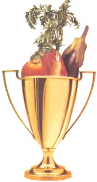 PHOTO ABOVE: ROBIN THOMAS Four varieties of corn. The earliest is second from the right; the second to ripen is on the left. They are sperated by the lates, Silver Queen. The third variety to mature is on the right. Separating them this way decreases the likelihood they will cross-pollinate. |
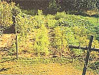 Condor zuncchini. Note how easy it is to see the fruit. |
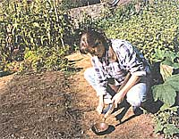 Popping Lincoln peas. |
|
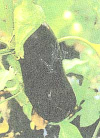 Green Ice and Buttercrunch lettuce. The photo was taken in August, showing how ell they grow in hot weather. |
 Whippersnapper red cherry tomatoes. |
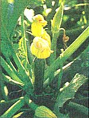 A broccoli variety that has especially heavy and rewarding side shoot. This is one of three varieties in a packet called George's Blend from Burpee. |
|
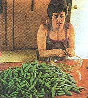 Melons are cranky, ever demanding the right proportions of temperature, moisture, nutrients, and attention. Sweet Granite (above) is our first success. |
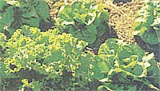 |
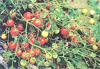 |
|
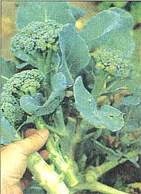 |
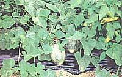 |
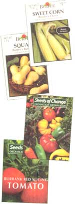 |